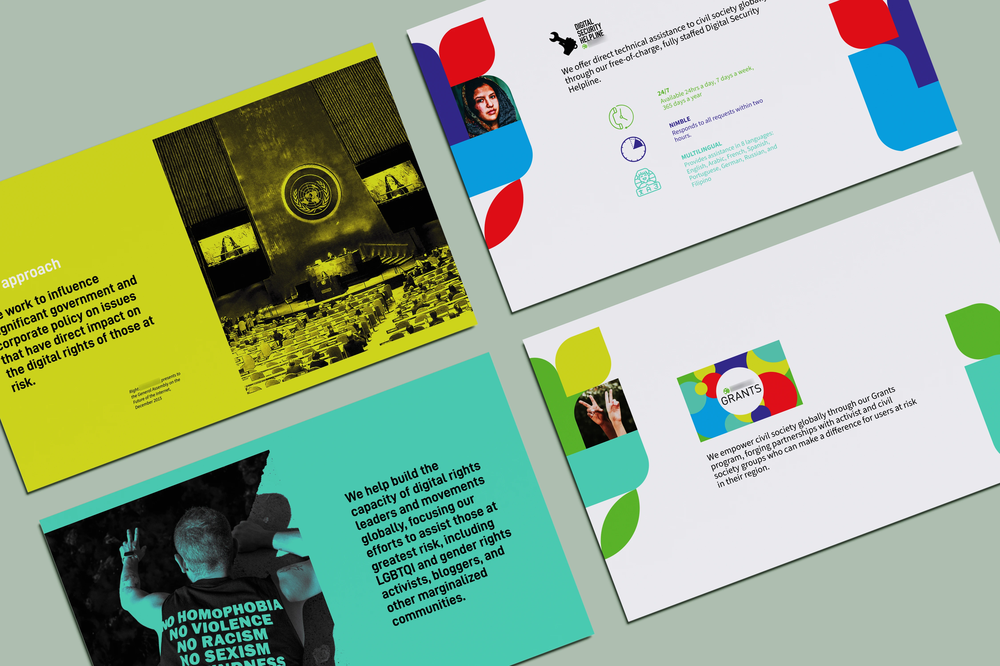
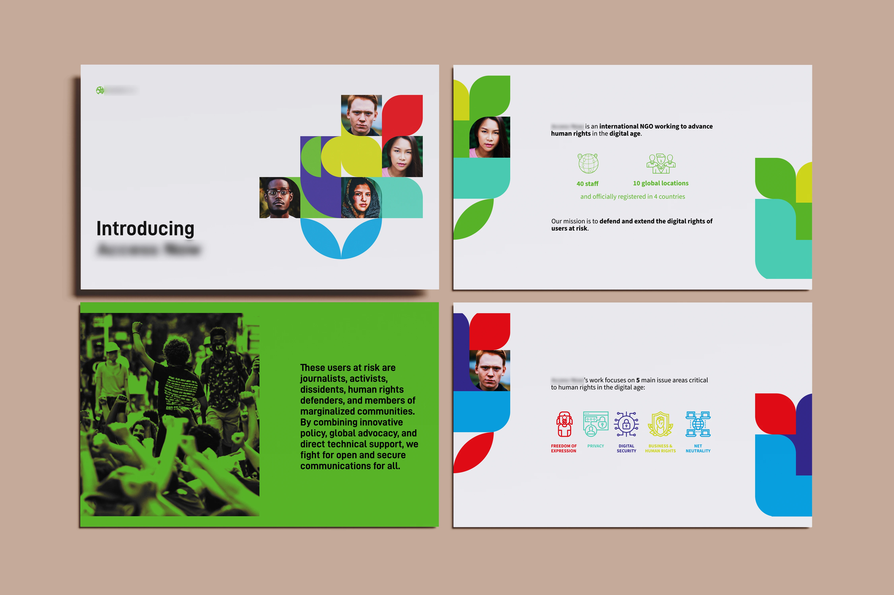
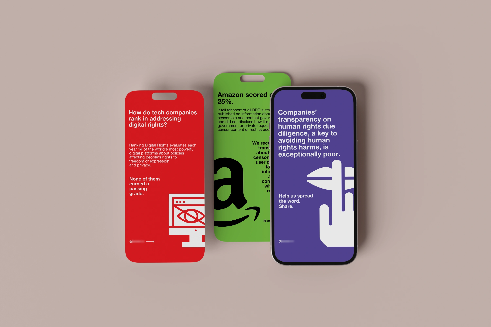

INTRO
The project focused on the creation of digital content for an international organisation that advocates for the digital rights of vulnerable communities. The goal was to present recent research and rankings on tech companies’ performance in respecting digital rights through a presentation and static Instagram stories. The primary audience included activists, industry professionals, and non-profit organisations.
The project focused on the creation of digital content for an international organisation that advocates for the digital rights of vulnerable communities. The goal was to present recent research and rankings on tech companies’ performance in respecting digital rights through a presentation and static Instagram stories. The primary audience included activists, industry professionals, and non-profit organisations.

THE CHALLENGE
The project presented several challenges related to the selection and synthesis of information. The complexity of the data and the need to convey technical concepts to a diverse audience required a minimalist and accessible approach. Working with the existing brand guidelines ensured consistency and allowed the development of a style that was visually clear and communicative, highlighting key data without overloading the graphic composition.
The project presented several challenges related to the selection and synthesis of information. The complexity of the data and the need to convey technical concepts to a diverse audience required a minimalist and accessible approach. Working with the existing brand guidelines ensured consistency and allowed the development of a style that was visually clear and communicative, highlighting key data without overloading the graphic composition.

THE SOLUTION
The presentation features a modern and clean style, incorporating geometric elements that reference technology. Close-up images of people from diverse backgrounds are framed within geometric shapes to reflect the organisation’s inclusive focus. The Instagram stories follow a simple layout, allowing ample space for data and utilising logos and icons to facilitate visual understanding. Negative space is used strategically to prevent clutter and maintain emphasis on key information.
The presentation features a modern and clean style, incorporating geometric elements that reference technology. Close-up images of people from diverse backgrounds are framed within geometric shapes to reflect the organisation’s inclusive focus. The Instagram stories follow a simple layout, allowing ample space for data and utilising logos and icons to facilitate visual understanding. Negative space is used strategically to prevent clutter and maintain emphasis on key information.
RESULT
The project helped strengthen the organisation’s visual identity and effectively communicate complex information through a minimalist and professional design. Thanks to a clear presentation and engaging Instagram stories, the result was an increased interest in the published research. The visual structure and strategic use of images and data received positive feedback, positioning the organisation as an authoritative and accessible resource in the digital rights landscape.
The project helped strengthen the organisation’s visual identity and effectively communicate complex information through a minimalist and professional design. Thanks to a clear presentation and engaging Instagram stories, the result was an increased interest in the published research. The visual structure and strategic use of images and data received positive feedback, positioning the organisation as an authoritative and accessible resource in the digital rights landscape.
